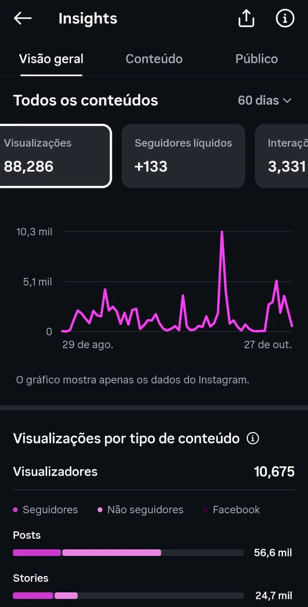
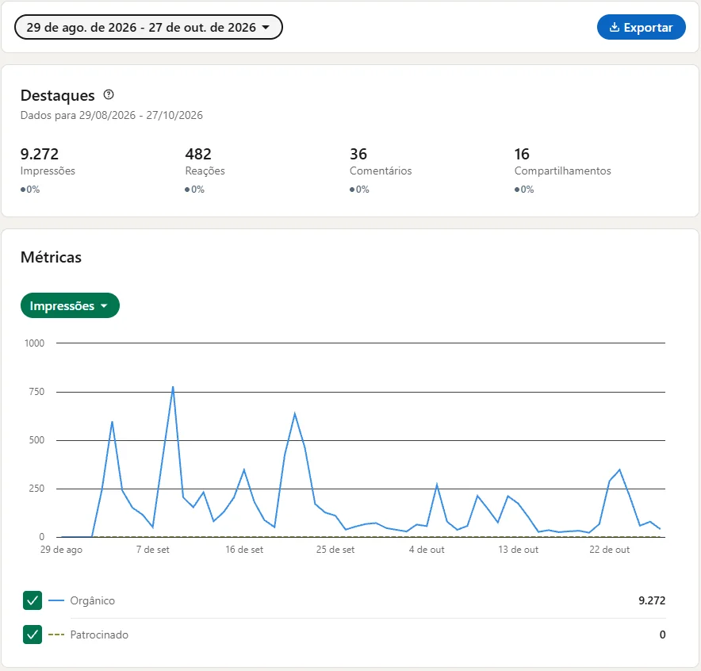

// uso interno
Relatórios 2026 por patrocinador
// relatório de resultados
2ª edição · 2026
Sertão Tech
2026
O que a 2ª edição entregou para .
09 de outubro de 2026
UFDPar · Parnaíba — PI
Patrocinador
// obrigado
Obrigado, .
Obrigado por apoiar a 2ª edição do Sertão Tech como patrocinador .
A meta era 150 pessoas presentes, contadas por check-in. Tivemos 176.
Organização do Sertão Tech · PHP PI & PHPWomen PI

// a meta
Meta: 150.
Resultado: 176.
150
meta de presentes
176
check-ins realizados no dia
117%
da meta
+26
pessoas acima da meta
Presença contada por check-in, não por inscrição.
// prestação de contas
Planejado × realizado
// resultados
A 2ª edição em números
Indicador
1ª edição
2ª edição
Variação
Inscritos
191
233
+22%
Presentes (check-in)
91
176
+93%
Comparecimento
48%
76%
+28 p.p.
Pessoas no palco
3
18
6x
7 patrocinadores · 4 caravanas · 4 cidades · inscrição de R$ 20
// presença digital · instagram
~22x mais visualizações que na 1ª edição
88.286
visualizações
10.675
contas alcançadas
3.331
interações
+133
seguidores
@osertaotech · 29 ago — 27 out 2026 · 100% orgânico
1ª edição: 3.938 visualizações em 30 dias de divulgação. 2ª edição: 60 dias. Na média por dia, ~11x.

// presença digital · linkedin
Uma página nova, do zero
A página do Sertão Tech no LinkedIn foi criada na 2ª edição. Nenhum real em anúncio.
9.272
impressões
482
reações
36
comentários
16
compartilhamentos
/company/osertaotech · 29 ago — 27 out 2026

// sua marca no site
O logo da continua no ar
Está no mural da edição 2026 e na home do Sertão Tech 2027, que divulga a 3ª edição, e fica lá até o fim de 2026.
635
pessoas visitaram o site
1,9 mil
visualizações da página da edição, onde fica o mural
1min55
de atenção média por visitante
Visitantes por cidade (estimada pelo IP)
Google Analytics · 30 jul — 27 out 2026
// sua marca no evento
A no Sertão Tech
// a plateia
Caravanas de 4 cursos de tecnologia
UFDPar
Bacharelado em Inteligência Artificial
IFPI · Parnaíba
Tecnólogo em Análise e Desenvolvimento de Software
Uninassau · Parnaíba
Tecnólogo em Análise e Desenvolvimento de Software
Uespi
Tecnologia em Sistemas de Computação
Participantes de Parnaíba, Luís Correia, Buriti dos Lopes e Teresina.
// programação
18 pessoas no palco

// registro
Como foi o dia


// 2027 · 3ª edição
O Sertão Tech está crescendo.
A pode impulsionar ainda mais esse crescimento.
01 · trilhas
Quatro trilhas
Principal, Robótica, Negócios e Sênior+. Do estudante ao profissional experiente.
02 · programas
Robotics e Business no YouTube
As trilhas de Robótica e Negócios viram programas gravados: batalhas e desafios de robôs no Robotics, pitches e mentorias com startups no Business. Cada programa tem uma única marca apresentadora.
03 · cotas
Bronze, Prata e Ouro
Cotas tradicionais, com os detalhes no kit 2027.
Kit completo: osertaotech.com.br/midia-kit
// próximo passo
Vamos conversar sobre 2027?
// sua opinião em 2 minutos
Conte o que funcionou e o que podemos melhorar para a 3ª edição.
Responder